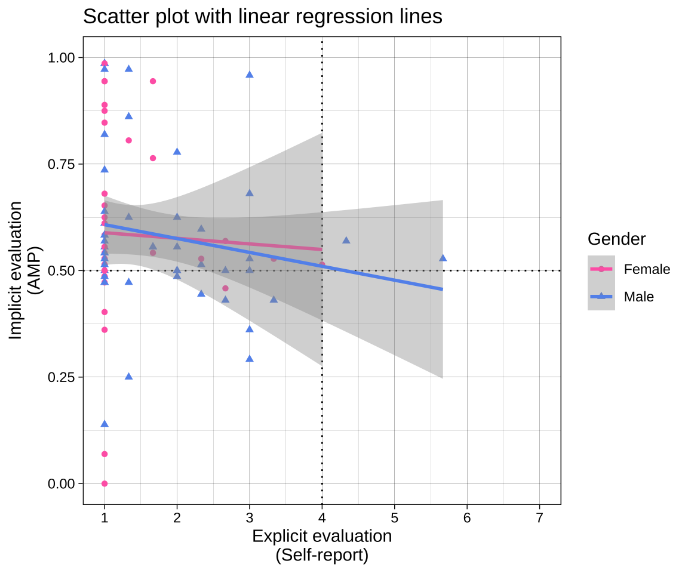

# data and aesthetics callsplot_1 <-ggplot(data = data_after_exclusions,aes(x = mean_self_report,y = amp_score,color = gender,shape = gender)) +# draw lines manuallygeom_vline(xintercept =4, linetype ="dotted") +geom_hline(yintercept =0.5, linetype ="dotted") +# draw geoms using the aesthetics (x, y, color and shape)## pointsgeom_point() +## fit curves, in this case a linear modelgeom_smooth(method ="lm") +# adjust axis labels and rangesscale_x_continuous(name ="Explicit evaluation\n(Self-report)",breaks = scales::breaks_pretty(n =7)) +scale_y_continuous(name ="Implicit evaluation\n(AMP)") +# apply a themetheme_linedraw() +# adjust elements of the themelabs(title ="Scatter plot with linear regression lines",color ="Gender",shape ="Gender") +# adjust the colors scale_color_manual(values =c("female"="#FF69B4","male"="#6495ED"),labels =c("female"="Female","male"="Male")) +# adjust the shapesscale_shape_manual(values =c("female"=16, "male"=17),labels =c("female"="Female","male"="Male")) +# display specific x and y coordinates without dropping data points (nb using `limits` drops data points, coord_cartesian does not) coord_cartesian(xlim =c(1, 7),ylim =c(0, 1))# display plot below chunkplot_1

Code
# save plot to disk as pdfggsave(plot = plot_1,filename ="plots/plot_1.pdf", width =6,height =5)
Note that you can add additional function calls to objects later, e.g., overriding the previous theme_ call with a new one:
How to add a dashed vertical line at the sample’s mean AMP score?
17 Density plot using geom_density()
17.1 Simple plot for self-reports
Code
ggplot(data = data_after_exclusions,aes(x = mean_self_report)) +geom_density(adjust =1, # the degree of smoothing can be adjusted here color ="#FF69B4",fill ="darkblue", alpha =0.3) +# labeling of the axis pointsscale_x_continuous(breaks = scales::breaks_pretty(n =7),limits =c(1, 7)) +theme_minimal()
17.1.0.1 Exercise
Plot for AMP
Make a similar density plot for the AMP.
Add a theme.
Make the X axis breaks prettier.
Name both axis names more clearly.
18 Bar plot using geom_col()
Bar plots are bad and usually shouldn’t be used. But they are sometimes unavoidable, so here’s how to make them.
18.1 Simple plot for AMP
Code
# create the summary values to be plottedsummary_amp <- data_after_exclusions %>%group_by(gender) %>%summarize(amp_mean =mean(amp_score),amp_se = plotrix::std.error(amp_score))# plot these valuesggplot(data = summary_amp, aes(x = gender, y = amp_mean)) +geom_col() +# geom_bar(stat = "identity") + # NB geom_col is equivalent to geom_bar when stat == "identitygeom_linerange(aes(ymin = amp_mean - amp_se, ymax = amp_mean + amp_se))
18.2 Slightly better plot for AMP
Code
ggplot(data = summary_amp, aes(x = gender, y = amp_mean)) +geom_col(fill ="#0b6623", # note that you can specify specific colors using hex codes or namescolor ="black", width =0.6) +geom_errorbar(aes(ymin = amp_mean - amp_se, ymax = amp_mean + amp_se), width =0.1, color ="black") +labs(title ="Bar Plot of with Standard Errors",x ="Gender",y ="Mean AMP score") +theme_linedraw()
18.2.0.1 Exercise
Plot for self-reports
Make a similar plot for the self-reports.
Use coord_flip() to swap the X and Y axes.
18.2.0.2 Exercise
How to capitalize ‘Male’ and ‘Female’ by wrangling the data before plotting?
Create a plot that assesses the association between self report scores and AMP scores. By wrangling data_processed more prior to plotting, and using facet_grid(), compare a) men vs women and b) participants who are 30+ years old vs younger than 30.
Improve the appearance of the plot, including its text, colors, theme, etc.
---title: "Visualization"format: html: toc: true toc_float: true code-fold: show code-tools: true---```{r, include=FALSE}# set knit optionsknitr::opts_chunk$set(message =FALSE,warning =FALSE)# disable scientific notationoptions(scipen =999) dir.create("plots")```<https://osf.io/preprints/psyarxiv/73ywp_v3><https://intro2r.com/bestiary.html># Dependencies```{r}library(readr)library(ggplot2)# install.packages("datasauRus")library(datasauRus) library(scales)library(dplyr)library(tidyr)library(plotrix) # install.packages("devtools")# devtools::install_github("matthewbjane/ThemePark")library(ThemePark)library(patchwork)library(janitor)library(knitr)library(kableExtra)```# Why plot data?Summary statistics aren't enough!```{r}# M and SDdatasaurus_dozen |>group_by(dataset) |>summarize(mean_x =mean(x),sd_x =sd(x),mean_y =mean(y),sd_y =sd(y)) |>mutate_if(is.numeric, round_half_up, digits =2) |>kable(align ='r')|>kable_classic(full_width =FALSE)# correlationdatasaurus_dozen |>group_by(dataset) |>summarize(correlation =cor(x, y)) |>mutate_if(is.numeric, round_half_up, digits =2) |>kable(align ='r') |>kable_classic(full_width =FALSE)```Always plot your data!```{r fig.height=10, fig.width=10}ggplot(datasaurus_dozen, aes(x = x, y = y)) +geom_point() +facet_wrap(~dataset) +theme_minimal()```# Structure of a ggplotWhereas the pipes (`%>%` and `|>`) are used to create tidy data wrangling and analysis workflows, ggplot functions are added together with `+`.Function calls are applied in order as layers. Changing the order functions are called can therefore change the appearance of the plot.```{r}# get datadata_processed <-read_csv("../data/processed/data_processed.csv")data_after_exclusions <- data_processed |>filter(exclude_amp =="include"& n_items ==3& gender %in%c("male", "female")) ``````{r fig.height=5, fig.width=6}# data and aesthetics callsplot_1 <-ggplot(data = data_after_exclusions,aes(x = mean_self_report,y = amp_score,color = gender,shape = gender)) +# draw lines manuallygeom_vline(xintercept =4, linetype ="dotted") +geom_hline(yintercept =0.5, linetype ="dotted") +# draw geoms using the aesthetics (x, y, color and shape)## pointsgeom_point() +## fit curves, in this case a linear modelgeom_smooth(method ="lm") +# adjust axis labels and rangesscale_x_continuous(name ="Explicit evaluation\n(Self-report)",breaks = scales::breaks_pretty(n =7)) +scale_y_continuous(name ="Implicit evaluation\n(AMP)") +# apply a themetheme_linedraw() +# adjust elements of the themelabs(title ="Scatter plot with linear regression lines",color ="Gender",shape ="Gender") +# adjust the colors scale_color_manual(values =c("female"="#FF69B4","male"="#6495ED"),labels =c("female"="Female","male"="Male")) +# adjust the shapesscale_shape_manual(values =c("female"=16, "male"=17),labels =c("female"="Female","male"="Male")) +# display specific x and y coordinates without dropping data points (nb using `limits` drops data points, coord_cartesian does not) coord_cartesian(xlim =c(1, 7),ylim =c(0, 1))# display plot below chunkplot_1# save plot to disk as pdfggsave(plot = plot_1,filename ="plots/plot_1.pdf", width =6,height =5)```Note that you can add additional function calls to objects later, e.g., overriding the previous theme\_ call with a new one:```{r}plot_1 +theme_barbie()```# Histogram using `geom_histogram()`## Simple plot for self-reports```{r}ggplot(data = data_after_exclusions,aes(x = mean_self_report)) +geom_histogram(binwidth =1)```## Slightly better plot for self-reports```{r}ggplot(data = data_after_exclusions,aes(x = mean_self_report)) +# more intelligent choices for the binwidth and boundarygeom_histogram(binwidth =1, boundary =0.5) +# labeling of the axis pointsscale_x_continuous(breaks = scales::breaks_pretty(n =7),limits =c(0.5, 7.5)) +scale_y_continuous(breaks =seq(0, 60, 10)) +theme_minimal()```#### ExercisePlot for genderCreate a similar plot for the gender variable in `data_processed` (ie before exclusions).```{r}```#### ExercisePlot for AMPCreate a similar plot for the AMP scores in `data_after_exclusions`.```{r}mean_amp <- data_after_exclusions |>summarize(mean_amp =mean(amp_score)) |>pull(mean_amp)plot_amp <-ggplot(data = data_after_exclusions,aes(x = amp_score)) +geom_histogram(binwidth =0.1) +scale_x_continuous(breaks =seq(0, 1, .10),name ="AMP score") +scale_y_continuous(breaks =seq(0, 40, 5),name ="Frequency") +geom_vline(xintercept = mean_amp, linetype ="dotted") +theme_linedraw()plot_ampggsave(plot = plot_amp,filename ="plots/plot_amp.pdf", width =6,height =5)```#### ExerciseHow to add a dashed vertical line at the sample's mean AMP score?# Density plot using `geom_density()`## Simple plot for self-reports```{r}ggplot(data = data_after_exclusions,aes(x = mean_self_report)) +geom_density(adjust =1, # the degree of smoothing can be adjusted here color ="#FF69B4",fill ="darkblue", alpha =0.3) +# labeling of the axis pointsscale_x_continuous(breaks = scales::breaks_pretty(n =7),limits =c(1, 7)) +theme_minimal()```#### ExercisePlot for AMPMake a similar density plot for the AMP.- Add a theme.- Make the X axis breaks prettier.- Name both axis names more clearly.```{r}```# Bar plot using `geom_col()`Bar plots are bad and usually shouldn't be used. But they are sometimes unavoidable, so here's how to make them.## Simple plot for AMP```{r}# create the summary values to be plottedsummary_amp <- data_after_exclusions %>%group_by(gender) %>%summarize(amp_mean =mean(amp_score),amp_se = plotrix::std.error(amp_score))# plot these valuesggplot(data = summary_amp, aes(x = gender, y = amp_mean)) +geom_col() +# geom_bar(stat = "identity") + # NB geom_col is equivalent to geom_bar when stat == "identitygeom_linerange(aes(ymin = amp_mean - amp_se, ymax = amp_mean + amp_se)) ```## Slightly better plot for AMP```{r}ggplot(data = summary_amp, aes(x = gender, y = amp_mean)) +geom_col(fill ="#0b6623", # note that you can specify specific colors using hex codes or namescolor ="black", width =0.6) +geom_errorbar(aes(ymin = amp_mean - amp_se, ymax = amp_mean + amp_se), width =0.1, color ="black") +labs(title ="Bar Plot of with Standard Errors",x ="Gender",y ="Mean AMP score") +theme_linedraw() ```#### ExercisePlot for self-reportsMake a similar plot for the self-reports.- Use `coord_flip()` to swap the X and Y axes.```{r}```#### ExerciseHow to capitalize 'Male' and 'Female' by wrangling the data before plotting?# Combining plots```{r}plot_all <- data_after_exclusions |>ggplot(aes(x = mean_self_report,y = amp_score)) +geom_point() +geom_smooth(method ="lm") +ggtitle("All")plot_women <- data_after_exclusions |>filter(gender =="female") |>ggplot(aes(x = mean_self_report,y = amp_score)) +geom_point() +geom_smooth(method ="lm") +ggtitle("Women")plot_men <- data_after_exclusions |>filter(gender =="male") |>ggplot(aes(x = mean_self_report,y = amp_score)) +geom_point() +geom_smooth(method ="lm") +ggtitle("Men")# combine these plots with different arrangementsplot_women + plot_menplot_women + plot_men +plot_layout(ncol =1)plot_all / (plot_women + plot_men)```# Faceting plotsWithout repeating yourself, you can also make a plot for different subsets using `facet_wrap()` or `facet_grid()````{r fig.height=4, fig.width=8}ggplot(data = data_after_exclusions,aes(x = mean_self_report,y = amp_score)) +geom_point() +geom_smooth(method ="lm") +facet_wrap(~ gender)```#### ExerciseCreate a plot that assesses the association between self report scores and AMP scores. By wrangling `data_processed` more prior to plotting, and using `facet_grid()`, compare a) men vs women and b) participants who are 30+ years old vs younger than 30.Improve the appearance of the plot, including its text, colors, theme, etc.```{r}```# Session info```{r}sessionInfo()```